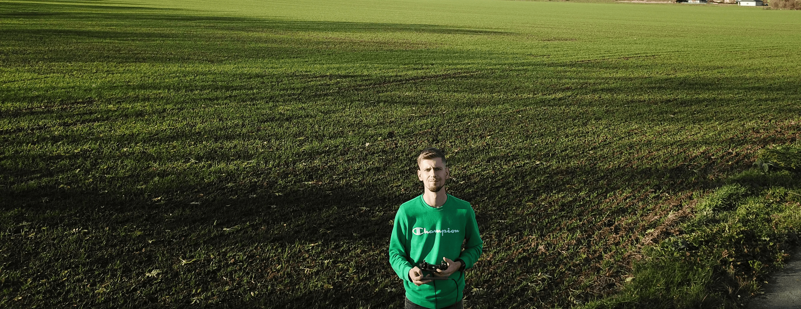
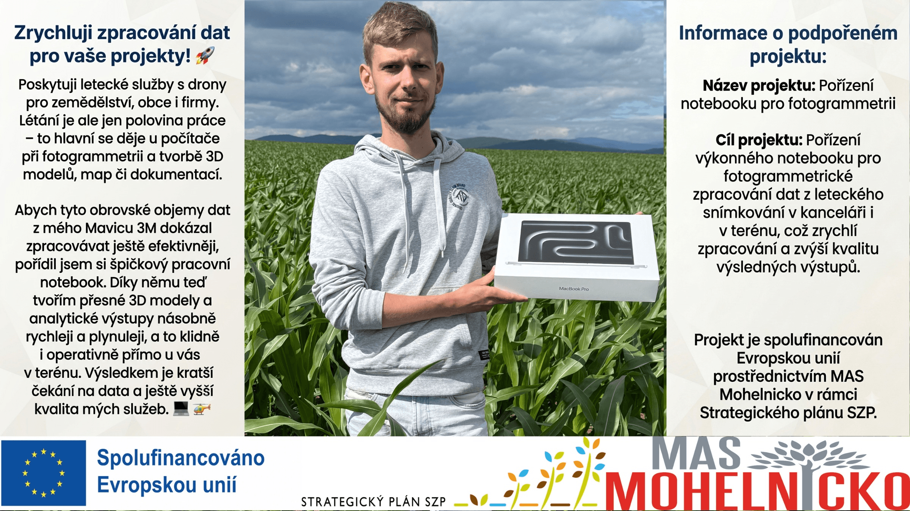

Jan Koukal
O mně
Jmenuji se Jan Koukal a specializuji se na precizní zemědělství, dálkový průzkum Země (DPZ) a využití dronů a multispektrálních kamer v praxi. Mým cílem je pomáhat zemědělcům a agronomům dělat informovaná rozhodnutí na základě dat – šetřit náklady, zvyšovat výnosy a zároveň pečovat o krajinu.
K přírodě mám blízký vztah od dětství. Už jako student jsem jezdil na žně a pracoval jako obsluha sklízecí mlátičky – právě tehdy jsem si uvědomil, jak důležité je dělat věci pořádně a s respektem k půdě. Dnes mě motivuje snaha spojovat moderní technologie s tradicí a poctivou prací – aby české zemědělství bylo efektivní, udržitelné a přátelské k přírodě.
Vystudoval jsem Střední lesnickou školu v Hranicích a poté obor Územní a technická správa na České zemědělské univerzitě v Praze (ČZU). Už během studia jsem se věnoval DPZ a dronům – i moje bakalářská práce se zaměřovala na „Návrh a ověření jednoduché metody pořízení obrazových dat pro projektování biotechnických prvků v krajině“.
Zkušenosti jsem získával také během stáží v Rusku a Kazachstánu, kde jsem se věnoval praktickému využití dálkového průzkumu a leteckého snímkování. Preciznímu zemědělství se věnuji od roku 2016 a od roku 2024 působím samostatně.
Pokud tě zajímá, jak může precizní zemědělství pomoct právě na tvé farmě, ozvi se mi.
Rád se podívám na konkrétní možnosti
a navrhnu řešení na míru.
